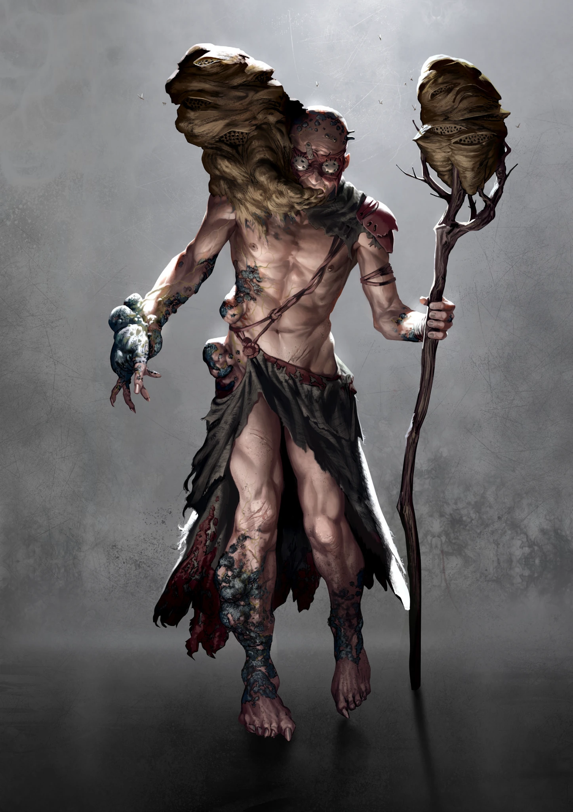
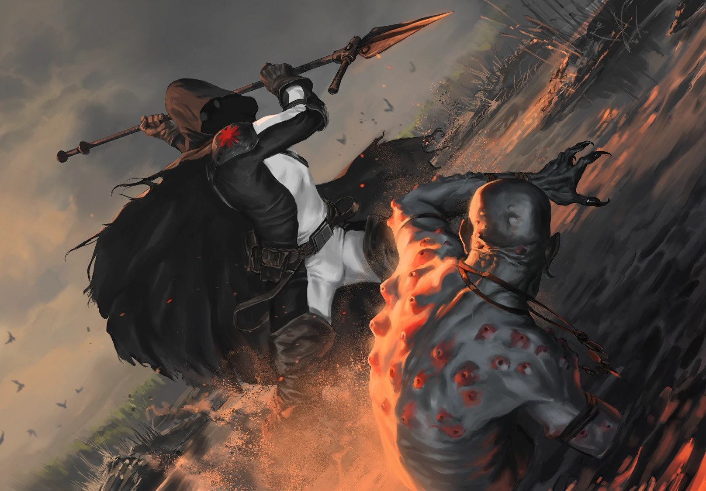

Primal
Pheromancers weaponize the oldest pathways of social behavior. Their glands produce pheromones that turn emotion, attraction, fear, and belonging into tools. To them individuality is a temporary flaw in a larger social organism.
FRANKA · THIRD RAPTURE
Queens of the Swarm
KatharSys pp. 301–305

RAPTURE
Pheromancers weaponize the oldest pathways of social behavior. Their glands produce pheromones that turn emotion, attraction, fear, and belonging into tools. To them individuality is a temporary flaw in a larger social organism.
Without the Rapture they lose much of their effortless magnetism. Their dream of unity remains, but beneath it lies a colder manipulator who still understands how to seduce and organize people.
Colony insects treat the Pheromancer as a queen. Ants, wasps, and termites build, defend, mark routes, and spread gland ichor across vast networks of nests and human settlements.
KNOWN PHENOMENA
The surrounding colony swells automatically where insects are plentiful and protects its master once a threat is recognized.
Lets a Pheromancer steer huge moving swarms through pheromone networks.
Floods targets with peace and trust, turning aggression into devotion if they fail to resist.
Long exposure saturates a victim with pheromones and weakens resistance to later influence.
Fires a corrosive gland jet that blinds exposed eyes according to Overload and Triggers.
Triggers overwhelming flight instincts in humans and animals.
Converts a settlement into a service colony whose inhabitants defend and obey the Queen.

VARIANTS
VARIANT: EXPATRIATE
Small mobile groups that communicate through body language, scent, and a reduced Chakra link while leading swarms beyond Franka.
PROFILE: EXPATRIATE INITIATIVE: 5D / 6 Ego Points SPORE INFESTATION: 12/16 SPECIALTY: Swarm Strength 3, CHA+Leadership 12D+2 ATTACK: Stinger applicator at the fingers, 7D, Distance 1 m, Damage 6, Smooth Running (2T); Acid Phenomenon, 6D DEFENSE: Passive 1 Melee active (Dodge), Mobility 6D Ranged Combat active (Looking for cover), Mobility 6D Mental 6D (No effect in the Primal phase) MOVEMENT: 9D ARMOR: None, Armor 0 CONDITION: 14 (Trauma: 8)
VARIANT: MIDWIFE
Collectors of children who answer the Pheromancer call and are taken away to become future rulers of human and insect colonies.
PROFILE: MIDWIFE INITIATIVE: 6D / 6 Ego Points | SPORE INFESTATION: 12/16 SPECIALTY: Swarm Strength 6, CHA+Leadership 12D ATTACK: Wasp staff, 5D, Distance 2 m, Damage Special: Wasps surround the nest at the top of the staff and sting anyone who gets close: 1D Damage; only “Sealed” armor protects; Acid Phenomenon, 6D DEFENSE: Passive 1 Melee active (Block), Melee 5D (Successful block with the wasp staff causes 1D wasp Damage even without enough Triggers for a counterstrike) Ranged Combat active (Nimble), Mobility 7D Mental 9D (No effect in Primal phase) MOVEMENT: 7D ARMOR: None, Armor 0 CONDITION: 14 (Trauma: 8)
VARIANT: QUEEN
Massive, stationary centers of pheromone networks whose glands, swarms, drones, and followers turn Ziggurats into living social machines.
PROFILE: QUEEN INITIATIVE: 10D / 4 Ego Points SPORE INFESTATION: 24/24 SPECIALTY: Swarm Strength 15, CHA+Leadership 12D+2, CHA+Expression 12D ATTACK: Acid Phenomenon, 5D DEFENSE: Passive 1 Melee active - Ranged Combat active - Mental 8D (no effect in primal phase) MOVEMENT: 2D ARMOR: None, Armor 4 CONDITION: 16 (Trauma: 8) EQUIPMENT: 6 Burn cusps (+1D spore infestation per cusp, inhaling takes 1 Action) ALLIES: A Queen is always surrounded by drones or free agents who hope to gain some profit from her mark. 5 to 10 Leperos or inhabitants of the settlement subject to the “Drone” Phenomenon hang at her teats and will do anything to defend her. She also commands Apocalyptics who harvest Burn on her behalf: 2 to 4 of them defend her nest.